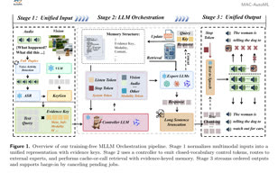
Training-Free Multimodal Large Language Model Orchestration
Tianyu Xie, Yuexiao Ma, Yuhang Wu, Wang Chen, Jiayi Ji, Tat-Seng Chua, Xiawu Zheng*, and Rongrong Ji
ICML, 2026
厦门大学人工智能研究院 副教授 / 博士生导师
鹏城国家实验室 双聘副研究员
IEEE Senior Member
郑侠武，厦门大学人工智能研究院副教授、博士生导师，鹏城国家实验室双聘副研究员，IEEE Senior Member。2018年至2021年在厦门大学计算机科学与技术专业攻读博士学位，博士导师为纪荣嵘教授；2022年至2023年在鹏城实验室从事博士后研究，博士后合作导师为田永鸿教授。
他的学术工作主要面向自动机器学习、模型压缩与多模态智能系统，已发表论文136篇，其中CCF-A类论文72篇，TPAMI论文5篇、IJCV论文4篇；截至2026年6月，Google Scholar总引用10,690次。近年担任NeurIPS 2025 Area Chair、ICLR 2026 Area Chair，并长期服务于CVPR、ICCV、ICML、AAAI、ACM MM等会议以及TPAMI、TIP、TMLR等期刊评审。
他主持国家自然科学基金面上项目、华为MindPipe自动化压缩框架等项目，作为主要起草人参与GB/T 42382.1-2023、20230717-T-469等国家标准，以及IEEE 2941系列和ITU-T F.AIM-RCM等国际标准。相关工作获IEEE SA Emerging Technology Award、IEEE标准杰出贡献奖、厦门市科技进步一等奖和教育部科技进步二等奖；与Jürgen Schmidhuber合作开源MetaGPT，截至2026年6月GitHub总标星68,961。
Recent corresponding-author papers are listed first, followed by representative recent or widely used works with public paper, code, project, or dataset links. * corresponding author

Training-Free Multimodal Large Language Model Orchestration
Tianyu Xie, Yuexiao Ma, Yuhang Wu, Wang Chen, Jiayi Ji, Tat-Seng Chua, Xiawu Zheng*, and Rongrong Ji
ICML, 2026
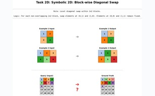
A2RBench: An Automatic Paradigm for Formally Verifiable Abstract Reasoning Benchmark Generation
Qingchuan Ma, Yuexiao Ma, Yongkang Xie, Tianyu Xie, Xiawu Zheng*, and Rongrong Ji
ICML, 2026
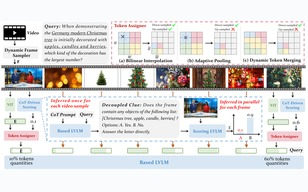
QuoTA: Query-Oriented Token Assignment via CoT Query Decouple for Long Video Comprehension
Yongdong Luo, Wang Chen, Weizhong Huang, Shukang Yin, Haojia Lin, Jinfa Huang, Chaoyou Fu, Jiayi Ji, Xiawu Zheng*, and Jiebo Luo
AAAI, 2026
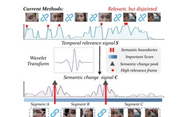
Wavelet-based Frame Selection by Detecting Semantic Boundary for Long Video Understanding
Wang Chen, Yuhui Zeng, Yongdong Luo, Tianyu Xie, Luojun Lin, Jiayi Ji, Yan Zhang, Xiawu Zheng*
CVPR, 2026
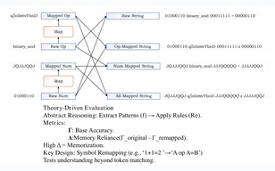
Benchmarking Abstract and Reasoning Abilities Through A Theoretical Perspective
Qingchuan Ma, Yuhang Wu, Xiawu Zheng*, and Rongrong Ji
ICML, 2025
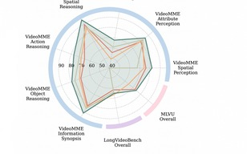
Video-RAG: Visually-Aligned Retrieval-Augmented Long Video Comprehension
Yongdong Luo, Xiawu Zheng*, Guilin Li, Shukang Yin, Haojia Lin, Chaoyou Fu, Jinfa Huang, Jiayi Ji, Fei Chao, Jiebo Luo, and Rongrong Ji
NeurIPS, 2025
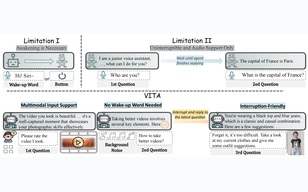
VITA-1.5: Towards GPT-4o Level Real-Time Vision and Speech Interaction
Chaoyou Fu, Haojia Lin, Xiong Wang, Yi-Fan Zhang, Yunhang Shen, Xiaoyu Liu, Haoyu Cao, Zuwei Long, Heting Gao, Ke Li, Long Ma, Xiawu Zheng, Rongrong Ji, Xing Sun, Caifeng Shan, and Ran He
NeurIPS, 2025
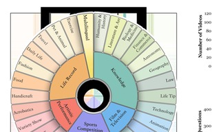
Video-MME: The First-Ever Comprehensive Evaluation Benchmark of Multi-Modal LLMs in Video Analysis
Chaoyou Fu, Yuhan Dai, Yongdong Luo, Lei Li, Shuhuai Ren, Renrui Zhang, Zihan Wang, Chenyu Zhou, Yunhang Shen, Mengdan Zhang, Peixian Chen, Yanwei Li, Shaohui Lin, Sirui Zhao, Ke Li, Tong Xu, Xiawu Zheng, et al.
CVPR, 2025
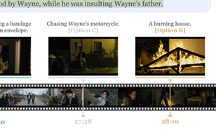
MME: A Comprehensive Evaluation Benchmark for Multimodal Large Language Models
Chaoyou Fu, Peixian Chen, Yunhang Shen, Yulei Qin, Mengdan Zhang, Xu Lin, Jinrui Yang, Xiawu Zheng, Ke Li, Xing Sun, Yunsheng Wu, Rongrong Ji, Caifeng Shan, and Ran He
NeurIPS Datasets and Benchmarks Track, 2025
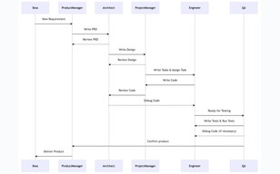
MetaGPT: Meta Programming for Multi-Agent Collaborative Framework
Sirui Hong, Xiawu Zheng, Jonathan Chen, Yuheng Cheng, Jinlin Wang, Ceyao Zhang, Zili Wang, Steven K. S. Yau, Zijuan Lin, Liyang Zhou, Chenyu Ran, Lingfeng Xiao, Chenglin Wu, and Jürgen Schmidhuber
ICLR, 2024
Representative journal papers in IEEE TPAMI and IJCV.
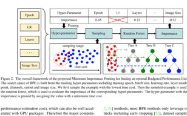
Good Performance Estimation Strategies Are All You Need in Neural Architecture Search
Xiawu Zheng, Lei Zhang, Binghan Chen, Mingkai Wang, Fei Chao, Chenglin Wu, Shanshan Wang, Rongrong Ji, and Yonghong Tian
IEEE Transactions on Pattern Analysis and Machine Intelligence, 2025
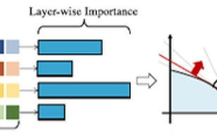
An Information Theory-Inspired Strategy for Automated Network Pruning
Xiawu Zheng, Yuexiao Ma, Teng Xi, Gang Zhang, Errui Ding, Yuchao Li, Jie Chen, Yonghong Tian, and Rongrong Ji
International Journal of Computer Vision, 2025
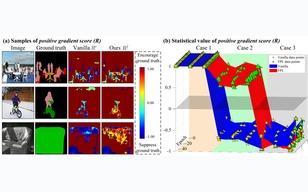
Adaptive Fuzzy Positive Learning for Annotation-Scarce Semantic Segmentation
Pengchong Qiao, Yu Wang, Chang Liu, Lijing Shang, Bing Sun, Zhennan Wang, Xiawu Zheng, Rongrong Ji, and Jie Chen
International Journal of Computer Vision, 2025
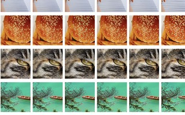
Uncovering the Over-Smoothing Challenge in Image Super-Resolution: Entropy-Based Quantification and Contrastive Optimization
Tianshuo Xu, Lijiang Li, Peng Mi, Xiawu Zheng, Fei Chao, Rongrong Ji, Yonghong Tian, and Qiang Shen
IEEE Transactions on Pattern Analysis and Machine Intelligence, 2024
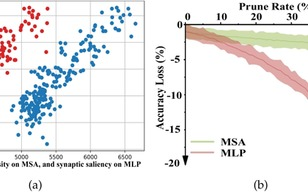
Training-Free Transformer Architecture Search with Zero-Cost Proxy Guided Evolution
Qi Zhou, Kai Sheng, Xiawu Zheng, Ke Li, Yonghong Tian, Jie Chen, and Rongrong Ji
IEEE Transactions on Pattern Analysis and Machine Intelligence, 2024
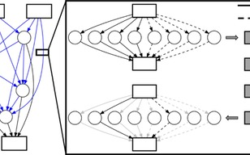
DDPNAS: Efficient Neural Architecture Search via Dynamic Distribution Pruning
Xiawu Zheng, Chenyi Yang, Shaokun Zhang, Yan Wang, Baochang Zhang, Yongjian Wu, Yunsheng Wu, Ling Shao, and Rongrong Ji
International Journal of Computer Vision, 2023
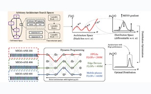
MIGO-NAS: Towards Fast and Generalizable Neural Architecture Search
Xiawu Zheng, Rongrong Ji, Yuhang Chen, Qiang Wang, Baochang Zhang, Jie Chen, Qixiang Ye, Feiyue Huang, and Yonghong Tian
IEEE Transactions on Pattern Analysis and Machine Intelligence, 2021
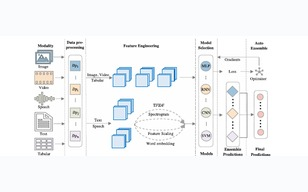
Evolving Fully Automated Machine Learning via Life-Long Knowledge Anchors
Xiawu Zheng, Yang Zhang, Sirui Hong, Huixia Li, Lang Tang, Youcheng Xiong, Jin Zhou, Yan Wang, Xiaoshuai Sun, Pengfei Zhu, Chenglin Wu, and Rongrong Ji
IEEE Transactions on Pattern Analysis and Machine Intelligence, 2021
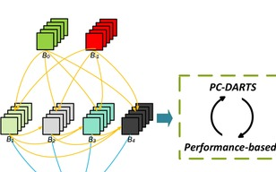
Binarized Neural Architecture Search for Efficient Object Recognition
Hanlin Chen, Li'an Zhuo, Baochang Zhang, Xiawu Zheng, Jianzhuang Liu, Rongrong Ji, David Doermann, and Guodong Guo
International Journal of Computer Vision, 2021
主持国家自然科学基金面上项目、华为MindPipe自动化压缩框架、中国博士后创新人才支持计划和中国博士后科学基金面上项目。
作为主要起草人参与GB/T 42382.1-2023、20230717-T-469等国家标准，并参与IEEE 2941、IEEE 2941.1、IEEE P2941.2、IEEE P2941.3和ITU-T F.AIM-RCM等国际标准。
开源与项目代表包括MetaGPT、XNAS、Training-Free LLM Orchestration、A2RBench、QuoTA、Video-RAG、VITA和Video-MME等。
担任NeurIPS 2025 Area Chair、ICLR 2026 Area Chair；担任AAAI、ACM MM程序委员会成员，并长期参与CVPR、ICCV、ICML等会议评审。
担任IEEE TPAMI、IEEE TIP、TMLR、Pattern Recognition、IEEE TMM、IEEE TNNLS等期刊审稿人。